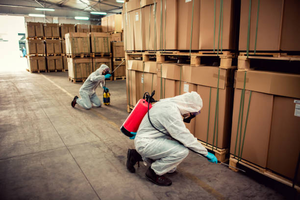

Termites are among the most persistent pest concerns for property owners in Indore, whether the property is a family home or a large commercial facility. Because termites often work out of sight, damage can build up before it's noticed. This article walks through what termites are, how to spot early signs of activity, and how termite management is generally approached for both residential and commercial properties.
Termites are small, pale insects that feed primarily on wood and other cellulose-based materials. They typically live in colonies, often underground or within wooden structures, and can remain active for long periods without being visibly noticed. Because of this hidden activity, termites are sometimes called a "silent" pest concern — the damage is often discovered only after it has progressed.
Recognising early signs of termite activity can make a meaningful difference in how a property owner responds. Common indicators include:
For residential properties, termite activity can affect furniture, door frames, wooden flooring and structural timber, sometimes leading to costly repairs if it goes unnoticed for a long time. For commercial properties, the concerns can be larger in scale — affecting stored goods, structural elements of a building, or a facility's overall condition. In both cases, addressing termite activity earlier generally leads to a more straightforward management process than waiting until damage has progressed.
Commercial properties often present different challenges compared to homes — larger floor areas, continuous operations, and sometimes older construction. Termite management planning for commercial spaces typically considers the property type and how it's used:
Commercial property owners may benefit from periodic inspection and a termite management plan suited to the size and layout of their facility, rather than a one-time treatment alone.
Pre-construction anti-termite treatment is generally carried out during the building phase, before flooring and foundations are fully sealed. The purpose is to create a barrier that can help reduce termite access to the structure from the ground up, while it's still practical to reach these areas.
Post-construction treatment is carried out once a building is already complete or occupied. Since access to foundations is more limited at this stage, the approach usually differs from pre-construction treatment and may involve techniques suited to existing structures, assessed on a case-by-case basis.
An anti-termite reticulation system is a network of pipes installed within a building's structure during construction, allowing future access for termite treatment without needing to break through floors or walls later. This can be a useful option for some construction projects, particularly larger or commercial builds, but it is not a requirement for every building. Whether a reticulation system is suitable depends on the specific construction plans and should be assessed by a professional during the design or building stage.
It's generally worth arranging an inspection if you notice mud tubes, discarded wings, hollow-sounding wood, or visible structural damage — or simply if it has been a long time since your property was last checked. For commercial properties in particular, periodic inspection can help catch early activity before it affects a larger area.
When choosing a pest control provider for termite management, property owners may want to consider:
Whether it's a home or a commercial facility, our team can help you plan the right next step.
This article is for general informational purposes and does not replace an on-site inspection. It does not make medical, scientific, or regulatory claims, and treatment outcomes are not guaranteed.
Related: Termite Management Services · Anti-Termite Reticulation System · Contact Us